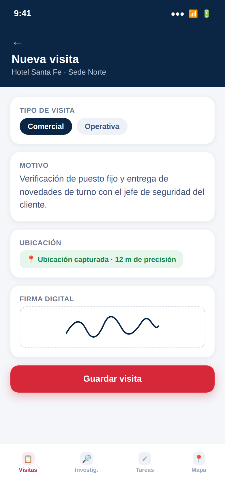
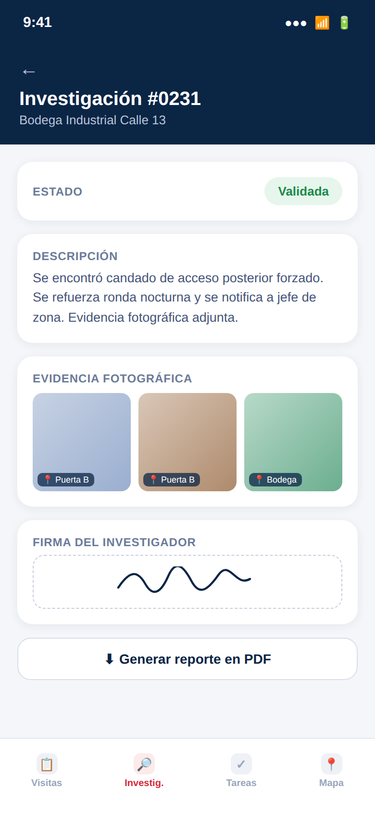
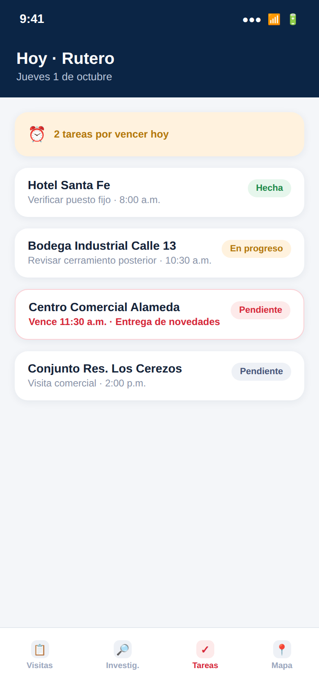
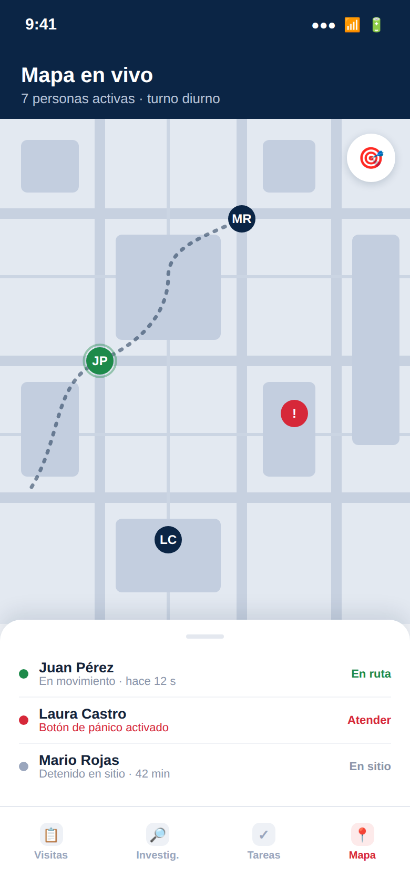

<title>Mosgal App Única</title>
<style>
/* Layout concept: tactical ops-board one-pager — sticky section nav, radar-grid hero,
   tabbed module console with phone mockups, horizontal phase timeline, investment ticket. */
:root{
  --bg:#F3F5F8; --bg-elev:#FFFFFF; --bg-sunken:#E9ECF2;
  --fg:#0E1420; --muted:#5B6676; --line:#DCE1E8;
  --accent:#0B3B6B; --accent-ink:#FFFFFF; --ok:#1E8E5A;
  --font-display:'Barlow Condensed',Arial Narrow,sans-serif;
  --font-body:'Source Sans 3',Arial,sans-serif;
  --font-mono:'IBM Plex Mono',ui-monospace,monospace;
}
@media (prefers-color-scheme: dark){
  :root:not([data-theme="light"]){
    --bg:#0A0E16; --bg-elev:#121826; --bg-sunken:#0E131E;
    --fg:#EDEFF3; --muted:#93A0B4; --line:#232B3B;
    --accent:#5B9BFF; --accent-ink:#0A0E16; --ok:#35C184;
    color-scheme:dark;
  }
}
:root[data-theme="dark"]{
  --bg:#0A0E16; --bg-elev:#121826; --bg-sunken:#0E131E;
  --fg:#EDEFF3; --muted:#93A0B4; --line:#232B3B;
  --accent:#5B9BFF; --accent-ink:#0A0E16; --ok:#35C184;
  color-scheme:dark;
}
*{box-sizing:border-box;}
body{
  margin:0; background:var(--bg); color:var(--fg);
  font-family:var(--font-body); font-size:16px; line-height:1.55;
  padding-inline:0;
}
img{max-width:100%; display:block;}
h1,h2,h3{font-family:var(--font-display); font-weight:700; text-wrap:balance; margin:0; letter-spacing:.01em;}
.mono{font-family:var(--font-mono);}
.wrap{max-width:1080px; margin:0 auto; padding-inline:20px;}
a{color:inherit;}

/* ---------- top nav ---------- */
.topnav{
  position:sticky; top:env(safe-area-inset-top,0px); z-index:50;
  background:color-mix(in srgb, var(--bg-elev) 88%, transparent);
  backdrop-filter:blur(10px); border-bottom:1px solid var(--line);
}
.topnav-inner{
  max-width:1080px; margin:0 auto; padding:12px 20px;
  display:flex; align-items:center; justify-content:space-between; gap:16px;
}
.brand{display:flex; align-items:center; gap:10px; font-family:var(--font-display); font-weight:700; font-size:19px; letter-spacing:.02em;}
.brand .logo{width:30px;height:30px;border-radius:50%; object-fit:cover; flex-shrink:0;}
.navlinks{display:flex; gap:22px; font-size:13.5px; font-weight:600; color:var(--muted); overflow-x:auto;}
.navlinks a{white-space:nowrap; text-decoration:none; padding:4px 2px; border-bottom:2px solid transparent;}
.navlinks a:hover{color:var(--fg); border-color:var(--accent);}

/* ---------- hero ---------- */
.hero{position:relative; overflow:hidden; border-bottom:1px solid var(--line);}
.hero-grid{
  position:absolute; inset:0;
  background-image:
    repeating-linear-gradient(0deg, color-mix(in srgb, var(--fg) 6%, transparent) 0 1px, transparent 1px 64px),
    repeating-linear-gradient(90deg, color-mix(in srgb, var(--fg) 6%, transparent) 0 1px, transparent 1px 64px);
  mask-image:radial-gradient(ellipse at 70% 20%, black 10%, transparent 72%);
  pointer-events:none;
}
.hero-inner{position:relative; padding:56px 20px 48px; max-width:1080px; margin:0 auto;}
.eyebrow{
  display:inline-flex; align-items:center; gap:8px; font-family:var(--font-mono); font-size:12.5px;
  letter-spacing:.08em; text-transform:uppercase; color:var(--accent); font-weight:600;
  border:1px solid color-mix(in srgb, var(--accent) 45%, var(--line)); padding:6px 12px; border-radius:999px;
  margin-bottom:18px;
}
.eyebrow .blip{width:7px;height:7px;border-radius:50%;background:var(--accent); animation:pulse 1.8s ease-in-out infinite;}
@keyframes pulse{0%,100%{opacity:1; transform:scale(1);} 50%{opacity:.35; transform:scale(1.5);}}
.hero h1{font-size:clamp(34px,5.4vw,58px); line-height:1.02; max-width:16ch;}
.hero h1 em{color:var(--accent); font-style:normal;}
.hero p.sub{max-width:52ch; color:var(--muted); font-size:17.5px; margin-top:16px;}
.statrow{display:flex; flex-wrap:wrap; gap:0; margin-top:34px; border:1px solid var(--line); border-radius:14px; overflow:hidden; background:var(--bg-elev);}
.stat{flex:1 1 140px; padding:16px 18px; border-right:1px solid var(--line);}
.stat:last-child{border-right:none;}
.stat .n{font-family:var(--font-mono); font-size:22px; font-weight:600; color:var(--accent);}
.stat .l{font-size:12px; color:var(--muted); text-transform:uppercase; letter-spacing:.05em; margin-top:2px;}

/* ---------- sections ---------- */
section{padding:64px 0; border-bottom:1px solid var(--line);}
section:last-of-type{border-bottom:none;}
.section-head{max-width:62ch; margin-bottom:34px;}
.section-head .eyebrow-sm{font-family:var(--font-mono); font-size:12px; letter-spacing:.09em; text-transform:uppercase; color:var(--accent); font-weight:700; margin-bottom:8px; display:block;}
.section-head h2{font-size:clamp(26px,3.6vw,36px);}
.section-head p{color:var(--muted); margin-top:10px; font-size:16px;}

/* objetivo icons */
.obj-grid{display:grid; grid-template-columns:repeat(auto-fit,minmax(220px,1fr)); gap:14px;}
.obj-card{border:1px solid var(--line); background:var(--bg-elev); border-radius:14px; padding:18px;}
.obj-card .ic{width:34px;height:34px;color:var(--accent); margin-bottom:12px;}
.obj-card h3{font-size:19px; font-weight:700;}
.obj-card p{color:var(--muted); font-size:14px; margin-top:6px;}

/* module console (tabs) */
.console{border:1px solid var(--line); border-radius:18px; background:var(--bg-elev); overflow:hidden;}
.tabbar{display:flex; border-bottom:1px solid var(--line); overflow-x:auto;}
.tabbtn{
  flex:1; min-width:140px; padding:16px 14px; text-align:left; background:none; border:none; cursor:pointer;
  font-family:var(--font-body); color:var(--muted); border-right:1px solid var(--line);
  display:flex; flex-direction:column; gap:3px;
}
.tabbtn:last-child{border-right:none;}
.tabbtn .t-ic{width:20px;height:20px;}
.tabbtn b{font-size:15px; color:inherit; font-family:var(--font-display); font-weight:700; letter-spacing:.01em;}
.tabbtn span{font-size:12px; color:var(--muted);}
.tabbtn[aria-selected="true"]{color:var(--fg); background:var(--bg-sunken); box-shadow:inset 0 3px 0 var(--accent);}
.tabpanel{display:none; padding:28px;}
.tabpanel.active{display:grid; grid-template-columns:1.3fr .9fr; gap:32px; align-items:start;}
@media (max-width:720px){ .tabpanel.active{grid-template-columns:1fr;} }
.feat-list{display:flex; flex-direction:column; gap:0;}
.feat{display:flex; gap:12px; padding:13px 0; border-bottom:1px solid var(--line);}
.feat:last-child{border-bottom:none;}
.feat .ic{width:20px;height:20px;color:var(--accent); flex-shrink:0; margin-top:2px;}
.feat b{font-size:15px; display:block;}
.feat p{margin:2px 0 0; font-size:13.5px; color:var(--muted);}
.phoneshot{justify-self:center;}
.phoneshot img{width:230px; border-radius:22px; border:1px solid var(--line); box-shadow:0 18px 40px -16px rgba(0,0,0,.35);}
.phoneshot .cap{text-align:center; font-size:12px; color:var(--muted); margin-top:10px; font-family:var(--font-mono);}

/* architecture */
.arch-grid{display:grid; grid-template-columns:repeat(auto-fit,minmax(200px,1fr)); gap:1px; background:var(--line); border:1px solid var(--line); border-radius:14px; overflow:hidden;}
.arch-card{background:var(--bg-elev); padding:20px;}
.arch-card .ic{width:26px;height:26px;color:var(--accent); margin-bottom:10px;}
.arch-card b{font-size:15px; display:block;}
.arch-card p{font-size:13px; color:var(--muted); margin-top:5px;}

/* timeline */
.timeline{display:flex; flex-direction:column; gap:0; border:1px solid var(--line); border-radius:16px; overflow:hidden; background:var(--bg-elev);}
.phase{display:grid; grid-template-columns:90px 1fr; border-bottom:1px solid var(--line); cursor:pointer;}
.phase:last-child{border-bottom:none;}
.phase .wk{font-family:var(--font-mono); font-size:12.5px; color:var(--accent); padding:18px 10px; border-right:1px solid var(--line); background:var(--bg-sunken); display:flex; align-items:center; justify-content:center; text-align:center; font-weight:700;}
.phase .body{padding:16px 18px;}
.phase .row{display:flex; align-items:center; justify-content:space-between; gap:10px;}
.phase b{font-size:16.5px; font-family:var(--font-display); font-weight:700;}
.phase .chev{color:var(--muted); transition:transform .2s ease; width:16px; height:16px; flex-shrink:0;}
.phase[data-open="true"] .chev{transform:rotate(180deg);}
.phase .detail{max-height:0; overflow:hidden; transition:max-height .25s ease;}
.phase[data-open="true"] .detail{max-height:120px;}
.phase .detail p{margin:10px 0 0; font-size:14px; color:var(--muted);}

/* investment */
.inv-wrap{display:grid; grid-template-columns:1fr 1fr; gap:22px;}
@media (max-width:720px){.inv-wrap{grid-template-columns:1fr;}}
.ticket{border:1px solid var(--line); background:var(--bg-elev); border-radius:18px; padding:28px; position:relative;}
.ticket .label{font-family:var(--font-mono); font-size:12px; text-transform:uppercase; letter-spacing:.08em; color:var(--muted);}
.ticket .amount{font-family:var(--font-mono); font-size:clamp(32px,4.4vw,44px); font-weight:600; margin-top:6px;}
.split{display:flex; gap:12px; margin-top:20px;}
.split div{flex:1; border:1px dashed var(--line); border-radius:10px; padding:12px; text-align:center;}
.split .pct{font-family:var(--font-mono); font-size:20px; font-weight:700; color:var(--accent);}
.split .lbl{font-size:12px; color:var(--muted); margin-top:2px;}
.recurring{border:1px solid var(--line); background:var(--bg-elev); border-radius:18px; padding:28px;}
.recurring .badge{display:inline-flex; align-items:center; gap:6px; background:color-mix(in srgb, var(--ok) 16%, transparent); color:var(--ok); font-weight:700; font-size:13px; padding:5px 11px; border-radius:999px;}
.toggle-btn{margin-top:16px; font-family:var(--font-mono); font-size:13px; background:none; border:1px solid var(--line); color:var(--fg); padding:9px 14px; border-radius:9px; cursor:pointer;}
.toggle-btn:hover{border-color:var(--accent); color:var(--accent);}
.rec-detail{display:none; margin-top:16px; padding-top:16px; border-top:1px solid var(--line); font-size:13.5px; color:var(--muted);}
.rec-detail.show{display:block;}
.rec-detail ul{margin:8px 0 0; padding-left:18px;}
.rec-detail li{margin-top:6px;}

/* notas operativas */
.notes-grid{display:grid; grid-template-columns:repeat(auto-fit,minmax(240px,1fr)); gap:14px;}
.note{display:flex; gap:12px; border:1px solid var(--line); background:var(--bg-elev); border-radius:14px; padding:16px;}
.note .ic{width:22px;height:22px;color:var(--accent); flex-shrink:0;}
.note p{font-size:14px; margin:0; color:var(--fg);}

/* conditions / closing */
.cond-list{list-style:none; margin:0; padding:0; display:flex; flex-direction:column; gap:0;}
.cond-list li{display:flex; gap:14px; padding:16px 0; border-bottom:1px solid var(--line);}
.cond-list li:last-child{border-bottom:none;}
.cond-list .k{font-family:var(--font-mono); font-size:12px; color:var(--accent); width:150px; flex-shrink:0; padding-top:2px; text-transform:uppercase; letter-spacing:.04em;}
.cond-list .v{font-size:15px;}
.closing{
  background:var(--fg); color:var(--bg); border-radius:20px; padding:40px 32px; text-align:center;
  position:relative; overflow:hidden;
}
.closing h2{color:var(--bg); font-size:clamp(24px,3.4vw,32px);}
.closing p{color:color-mix(in srgb, var(--bg) 70%, transparent); max-width:48ch; margin:12px auto 0;}
footer{padding:28px 0 48px; text-align:center; color:var(--muted); font-size:13px; font-family:var(--font-mono);}
footer .author{display:block; margin-top:4px; opacity:.8;}
</style>

<link rel="preconnect" href="https://fonts.googleapis.com">
<link href="https://fonts.googleapis.com/css2?family=Barlow+Condensed:wght@600;700;800&family=Source+Sans+3:wght@400;500;600;700&family=IBM+Plex+Mono:wght@500;600&display=swap" rel="stylesheet">

<nav class="topnav">
  <div class="topnav-inner">
    <div class="brand">MOSGAL · APP ÚNICA</div>
    <div class="navlinks">
      <a href="#objetivo">Objetivo</a>
      <a href="#modulos">Módulos</a>
      <a href="#arquitectura">Arquitectura</a>
      <a href="#cronograma">Cronograma</a>
      <a href="#inversion">Inversión</a>
      <a href="#condiciones">Condiciones</a>
    </div>
  </div>
</nav>

<header class="hero">
  <div class="hero-grid"></div>
  <div class="hero-inner">
    <div class="eyebrow"><span class="blip"></span>Propuesta comercial · Seguridad Mosgal Ltda.</div>
    <h1>Una sola app para <em>visitas, investigaciones, tareas</em> y rastreo en tiempo real</h1>
    <p class="sub">Un desarrollo construido desde cero sobre Firebase: un único usuario, una única base de datos, una sola app que el equipo instala una vez.</p>
    <div class="statrow">
      <div class="stat"><div class="n">4</div><div class="l">Módulos integrados</div></div>
      <div class="stat"><div class="n">5</div><div class="l">Fases de desarrollo</div></div>
      <div class="stat"><div class="n">12</div><div class="l">Semanas</div></div>
      <div class="stat"><div class="n">$13,5M</div><div class="l">Inversión (COP)</div></div>
    </div>
  </div>
</header>

<main class="wrap">

<section id="objetivo">
  <div class="section-head">
    <span class="eyebrow-sm">01 · Objetivo y alcance</span>
    <h2>Lo que hoy serían dos sistemas separados, en uno solo</h2>
    <p>Visitas, investigaciones y tareas comparten la misma sesión, el mismo usuario y la misma base de clientes que el rastreo del personal en campo. Una visita registrada se ve en el mismo mapa que muestra el recorrido de esa persona ese día.</p>
  </div>
  <div class="obj-grid">
    <div class="obj-card">
      <svg class="ic" viewBox="0 0 24 24" fill="none" stroke="currentColor" stroke-width="1.8" stroke-linecap="round" stroke-linejoin="round"><rect x="5" y="4" width="14" height="17" rx="2"/><path d="M9 3h6v3H9z"/><path d="M9 11h6M9 15h4"/></svg>
      <h3>Visitas</h3>
      <p>Comerciales y operativas, con formato propio, firma y ubicación exacta.</p>
    </div>
    <div class="obj-card">
      <svg class="ic" viewBox="0 0 24 24" fill="none" stroke="currentColor" stroke-width="1.8" stroke-linecap="round" stroke-linejoin="round"><circle cx="10.5" cy="10.5" r="6.5"/><path d="M20 20l-4.8-4.8"/></svg>
      <h3>Investigaciones</h3>
      <p>Texto y evidencia fotográfica con ubicación, listas para auditoría.</p>
    </div>
    <div class="obj-card">
      <svg class="ic" viewBox="0 0 24 24" fill="none" stroke="currentColor" stroke-width="1.8" stroke-linecap="round" stroke-linejoin="round"><path d="M9 11l2 2 4-4"/><rect x="4" y="4" width="16" height="16" rx="3"/></svg>
      <h3>Tareas</h3>
      <p>Asignación, seguimiento y alertas de vencimiento en tiempo real.</p>
    </div>
    <div class="obj-card">
      <svg class="ic" viewBox="0 0 24 24" fill="none" stroke="currentColor" stroke-width="1.8" stroke-linecap="round" stroke-linejoin="round"><path d="M12 21s7-6.2 7-11.5A7 7 0 0 0 5 9.5C5 14.8 12 21 12 21z"/><circle cx="12" cy="9.5" r="2.3"/></svg>
      <h3>Rastreo</h3>
      <p>Mapa en vivo, botón de pánico e informes de recorrido diario.</p>
    </div>
  </div>
</section>

<section id="modulos">
  <div class="section-head">
    <span class="eyebrow-sm">02 · Módulos</span>
    <h2>Cómo se ve cada módulo dentro de la app</h2>
    <p>Mockups de referencia por pantalla. El diseño final se ajusta con el logo y los colores de Mosgal.</p>
  </div>
  <div class="console">
    <div class="tabbar" role="tablist">
      <button class="tabbtn" data-tab="visitas" aria-selected="true" role="tab"><b>Visitas</b><span>Formato + firma + GPS</span></button>
      <button class="tabbtn" data-tab="investigaciones" aria-selected="false" role="tab"><b>Investigaciones</b><span>Texto + foto + firma</span></button>
      <button class="tabbtn" data-tab="tareas" aria-selected="false" role="tab"><b>Tareas</b><span>Rutero del día</span></button>
      <button class="tabbtn" data-tab="rastreo" aria-selected="false" role="tab"><b>Rastreo</b><span>Mapa en vivo</span></button>
    </div>

    <div class="tabpanel active" data-panel="visitas">
      <div class="feat-list">
        <div class="feat"><svg class="ic" viewBox="0 0 24 24" fill="none" stroke="currentColor" stroke-width="1.8" stroke-linecap="round" stroke-linejoin="round"><path d="M4 12h16M4 6h10M4 18h7"/></svg><div><b>Formato propio de la empresa</b><p>El formulario replica la plantilla que ya usa Mosgal, mismos campos y orden.</p></div></div>
        <div class="feat"><svg class="ic" viewBox="0 0 24 24" fill="none" stroke="currentColor" stroke-width="1.8" stroke-linecap="round" stroke-linejoin="round"><path d="M4 18c3-6 6 6 9 0s5-10 7-6"/></svg><div><b>Firma digital</b><p>Firma táctil capturada en el momento y guardada junto al registro.</p></div></div>
        <div class="feat"><svg class="ic" viewBox="0 0 24 24" fill="none" stroke="currentColor" stroke-width="1.8" stroke-linecap="round" stroke-linejoin="round"><path d="M12 21s7-6.2 7-11.5A7 7 0 0 0 5 9.5C5 14.8 12 21 12 21z"/><circle cx="12" cy="9.5" r="2"/></svg><div><b>Geolocalización exacta</b><p>Ubicación capturada al guardar, confirma que la visita se hizo en sitio.</p></div></div>
        <div class="feat"><svg class="ic" viewBox="0 0 24 24" fill="none" stroke="currentColor" stroke-width="1.8" stroke-linecap="round" stroke-linejoin="round"><path d="M9 12l2 2 4-4"/><circle cx="12" cy="12" r="9"/></svg><div><b>Flujo de validación</b><p>Pendiente de revisión → aprobación o ajustes del supervisor → Validada.</p></div></div>
        <div class="feat"><svg class="ic" viewBox="0 0 24 24" fill="none" stroke="currentColor" stroke-width="1.8" stroke-linecap="round" stroke-linejoin="round"><path d="M12 8v4l3 2"/><circle cx="12" cy="12" r="9"/></svg><div><b>Alerta de días sin visitar</b><p>Calcula los días desde la última visita y resalta los que superan el umbral.</p></div></div>
        <div class="feat"><svg class="ic" viewBox="0 0 24 24" fill="none" stroke="currentColor" stroke-width="1.8" stroke-linecap="round" stroke-linejoin="round"><path d="M3 12h4l2-7 4 14 2-7h6"/></svg><div><b>Captura sin conexión</b><p>Funciona sin internet y sincroniza apenas haya señal.</p></div></div>
      </div>
      <div class="phoneshot"><div class="cap">Pantalla · Nueva visita</div></div>
    </div>

    <div class="tabpanel" data-panel="investigaciones">
      <div class="feat-list">
        <div class="feat"><svg class="ic" viewBox="0 0 24 24" fill="none" stroke="currentColor" stroke-width="1.8" stroke-linecap="round" stroke-linejoin="round"><path d="M4 12h16M4 6h10M4 18h7"/></svg><div><b>Formato propio de la empresa</b><p>Campos y orden replican el formato de investigación que Mosgal ya usa.</p></div></div>
        <div class="feat"><svg class="ic" viewBox="0 0 24 24" fill="none" stroke="currentColor" stroke-width="1.8" stroke-linecap="round" stroke-linejoin="round"><path d="M4 18c3-6 6 6 9 0s5-10 7-6"/></svg><div><b>Firma digital</b><p>De quien investiga y, cuando aplique, de quien valida.</p></div></div>
        <div class="feat"><svg class="ic" viewBox="0 0 24 24" fill="none" stroke="currentColor" stroke-width="1.8" stroke-linecap="round" stroke-linejoin="round"><rect x="4" y="5" width="16" height="13" rx="2"/><circle cx="9" cy="10.5" r="1.6"/><path d="M5 17l4.5-4.5 2.5 2.5L18 9"/></svg><div><b>Evidencia fotográfica con ubicación</b><p>Hasta 3 fotos por caso, con la geolocalización de dónde se tomaron.</p></div></div>
        <div class="feat"><svg class="ic" viewBox="0 0 24 24" fill="none" stroke="currentColor" stroke-width="1.8" stroke-linecap="round" stroke-linejoin="round"><path d="M9 12l2 2 4-4"/><circle cx="12" cy="12" r="9"/></svg><div><b>Flujo de validación</b><p>Registrada → revisión del supervisor → Validada, igual que en Visitas.</p></div></div>
        <div class="feat"><svg class="ic" viewBox="0 0 24 24" fill="none" stroke="currentColor" stroke-width="1.8" stroke-linecap="round" stroke-linejoin="round"><path d="M3 12h4l2-7 4 14 2-7h6"/></svg><div><b>Captura sin conexión</b><p>Funciona sin internet, igual que en Visitas.</p></div></div>
        <div class="feat"><svg class="ic" viewBox="0 0 24 24" fill="none" stroke="currentColor" stroke-width="1.8" stroke-linecap="round" stroke-linejoin="round"><path d="M12 4v10M7 9l5 5 5-5"/><path d="M5 19h14"/></svg><div><b>Reporte en PDF</b><p>Con texto y fotos incluidas, listo para entregar.</p></div></div>
      </div>
      <div class="phoneshot"><div class="cap">Pantalla · Investigación #0231</div></div>
    </div>

    <div class="tabpanel" data-panel="tareas">
      <div class="feat-list">
        <div class="feat"><svg class="ic" viewBox="0 0 24 24" fill="none" stroke="currentColor" stroke-width="1.8" stroke-linecap="round" stroke-linejoin="round"><path d="M9 11l2 2 4-4"/><rect x="4" y="4" width="16" height="16" rx="3"/></svg><div><b>Seguimiento</b><p>Cada tarea muestra quién la asignó, a quién y su historial de estados.</p></div></div>
        <div class="feat"><svg class="ic" viewBox="0 0 24 24" fill="none" stroke="currentColor" stroke-width="1.8" stroke-linecap="round" stroke-linejoin="round"><path d="M12 8v4l3 2"/><circle cx="12" cy="12" r="9"/></svg><div><b>Alertas de vencimiento</b><p>Notificación push cuando una tarea está por vencer o ya venció.</p></div></div>
        <div class="feat"><svg class="ic" viewBox="0 0 24 24" fill="none" stroke="currentColor" stroke-width="1.8" stroke-linecap="round" stroke-linejoin="round"><rect x="4" y="4" width="16" height="16" rx="2"/><path d="M8 4v16M4 9h4"/></svg><div><b>Panel de atrasadas</b><p>Vista rápida de tareas vencidas por persona.</p></div></div>
        <div class="feat"><svg class="ic" viewBox="0 0 24 24" fill="none" stroke="currentColor" stroke-width="1.8" stroke-linecap="round" stroke-linejoin="round"><path d="M12 21s7-6.2 7-11.5A7 7 0 0 0 5 9.5C5 14.8 12 21 12 21z"/><circle cx="12" cy="9.5" r="2"/></svg><div><b>Tareas con ubicación</b><p>Cada tarea puede quedar asociada al sitio donde se debe realizar.</p></div></div>
        <div class="feat"><svg class="ic" viewBox="0 0 24 24" fill="none" stroke="currentColor" stroke-width="1.8" stroke-linecap="round" stroke-linejoin="round"><path d="M4 7h16M4 12h16M4 17h10"/></svg><div><b>Rutero del día</b><p>Agenda ordenada por sede, como el plan de trabajo diario de cada persona.</p></div></div>
      </div>
      <div class="phoneshot"><div class="cap">Pantalla · Rutero del día</div></div>
    </div>

    <div class="tabpanel" data-panel="rastreo">
      <div class="feat-list">
        <div class="feat"><svg class="ic" viewBox="0 0 24 24" fill="none" stroke="currentColor" stroke-width="1.8" stroke-linecap="round" stroke-linejoin="round"><path d="M12 21s7-6.2 7-11.5A7 7 0 0 0 5 9.5C5 14.8 12 21 12 21z"/><circle cx="12" cy="9.5" r="2"/></svg><div><b>Mapa en vivo</b><p>Posición de cada persona del equipo, visible para el supervisor.</p></div></div>
        <div class="feat"><svg class="ic" viewBox="0 0 24 24" fill="none" stroke="currentColor" stroke-width="1.8" stroke-linecap="round" stroke-linejoin="round"><circle cx="12" cy="12" r="9"/><path d="M12 7v5l3 2"/></svg><div><b>Botón de emergencia</b><p>Visible en todo momento durante el turno.</p></div></div>
        <div class="feat"><svg class="ic" viewBox="0 0 24 24" fill="none" stroke="currentColor" stroke-width="1.8" stroke-linecap="round" stroke-linejoin="round"><path d="M4 18l5-10 4 7 3-5 4 8"/></svg><div><b>Historial de recorridos</b><p>Por persona y por día, con tiempo en movimiento vs. detenido.</p></div></div>
        <div class="feat"><svg class="ic" viewBox="0 0 24 24" fill="none" stroke="currentColor" stroke-width="1.8" stroke-linecap="round" stroke-linejoin="round"><rect x="4" y="4" width="16" height="16" rx="2"/><path d="M8 4v16M4 9h4"/></svg><div><b>Tiempo en sitio</b><p>Mediante geocercas alrededor de cada puesto de vigilancia.</p></div></div>
        <div class="feat"><svg class="ic" viewBox="0 0 24 24" fill="none" stroke="currentColor" stroke-width="1.8" stroke-linecap="round" stroke-linejoin="round"><path d="M12 4v10M7 9l5 5 5-5"/><path d="M5 19h14"/></svg><div><b>Exportación a Excel/PDF</b><p>Como respaldo documental ante clientes o auditorías.</p></div></div>
      </div>
      <div class="phoneshot"><div class="cap">Pantalla · Mapa en vivo</div></div>
    </div>
  </div>
</section>

<section id="arquitectura">
  <div class="section-head">
    <span class="eyebrow-sm">03 · Arquitectura técnica</span>
    <h2>Todo sobre Firebase, nada en hojas de cálculo</h2>
    <p>La plataforma de Google para aplicaciones en tiempo real, entregada como una app instalable en Android.</p>
  </div>
  <div class="arch-grid">
    <div class="arch-card">
      <svg class="ic" viewBox="0 0 24 24" fill="none" stroke="currentColor" stroke-width="1.7" stroke-linecap="round" stroke-linejoin="round"><ellipse cx="12" cy="6" rx="8" ry="3"/><path d="M4 6v12c0 1.7 3.6 3 8 3s8-1.3 8-3V6"/><path d="M4 12c0 1.7 3.6 3 8 3s8-1.3 8-3"/></svg>
      <b>Firestore</b><p>Base de datos en la nube: visitas, investigaciones, tareas y ubicaciones, sincronizadas al instante.</p>
    </div>
    <div class="arch-card">
      <svg class="ic" viewBox="0 0 24 24" fill="none" stroke="currentColor" stroke-width="1.7" stroke-linecap="round" stroke-linejoin="round"><path d="M12 2l8 4-8 4-8-4 8-4z"/><path d="M4 12l8 4 8-4M4 17l8 4 8-4"/></svg>
      <b>Authentication</b><p>Inicio de sesión individual por usuario, con permisos según el rol.</p>
    </div>
    <div class="arch-card">
      <svg class="ic" viewBox="0 0 24 24" fill="none" stroke="currentColor" stroke-width="1.7" stroke-linecap="round" stroke-linejoin="round"><path d="M13 2L4 14h6l-1 8 9-12h-6l1-8z"/></svg>
      <b>Cloud Functions</b><p>Lógica de servidor: cálculo de alertas, vencimientos y notificaciones push.</p>
    </div>
    <div class="arch-card">
      <svg class="ic" viewBox="0 0 24 24" fill="none" stroke="currentColor" stroke-width="1.7" stroke-linecap="round" stroke-linejoin="round"><rect x="4" y="3" width="16" height="18" rx="2"/><path d="M8 7h8M8 11h8M8 15h5"/></svg>
      <b>Storage</b><p>Almacenamiento de fotos de investigaciones y firmas digitales.</p>
    </div>
    <div class="arch-card">
      <svg class="ic" viewBox="0 0 24 24" fill="none" stroke="currentColor" stroke-width="1.7" stroke-linecap="round" stroke-linejoin="round"><path d="M12 21s7-6.2 7-11.5A7 7 0 0 0 5 9.5C5 14.8 12 21 12 21z"/><circle cx="12" cy="9.5" r="2"/></svg>
      <b>Google Maps Platform</b><p>Mapa en vivo y cálculo de rutas y geocercas.</p>
    </div>
    <div class="arch-card">
      <svg class="ic" viewBox="0 0 24 24" fill="none" stroke="currentColor" stroke-width="1.7" stroke-linecap="round" stroke-linejoin="round"><rect x="7" y="2" width="10" height="20" rx="2"/><path d="M11 18h2"/></svg>
      <b>PWA instalable</b><p>Se agrega a la pantalla de inicio en Android, sin tienda de aplicaciones, y funciona sin conexión.</p>
    </div>
  </div>
</section>

<section id="cronograma">
  <div class="section-head">
    <span class="eyebrow-sm">04 · Cronograma</span>
    <h2>5 fases, 12 semanas</h2>
    <p>Toca cada fase para ver el detalle.</p>
  </div>
  <div class="timeline" id="timeline">
    <div class="phase" data-open="true">
      <div class="wk">SEM 1–2</div>
      <div class="body">
        <div class="row"><b>1 · Diseño y configuración</b><svg class="chev" viewBox="0 0 24 24" fill="none" stroke="currentColor" stroke-width="2" stroke-linecap="round" stroke-linejoin="round"><path d="M6 9l6 6 6-6"/></svg></div>
        <div class="detail"><p>Modelo de datos en Firestore, autenticación y diseño de pantallas con la identidad de Mosgal.</p></div>
      </div>
    </div>
    <div class="phase" data-open="false">
      <div class="wk">SEM 3–5</div>
      <div class="body">
        <div class="row"><b>2 · Visitas e Investigaciones</b><svg class="chev" viewBox="0 0 24 24" fill="none" stroke="currentColor" stroke-width="2" stroke-linecap="round" stroke-linejoin="round"><path d="M6 9l6 6 6-6"/></svg></div>
        <div class="detail"><p>Formularios propios, firma digital, geolocalización, flujo de validación y captura sin conexión.</p></div>
      </div>
    </div>
    <div class="phase" data-open="false">
      <div class="wk">SEM 6–7</div>
      <div class="body">
        <div class="row"><b>3 · Tareas y alertas</b><svg class="chev" viewBox="0 0 24 24" fill="none" stroke="currentColor" stroke-width="2" stroke-linecap="round" stroke-linejoin="round"><path d="M6 9l6 6 6-6"/></svg></div>
        <div class="detail"><p>Tablero de tareas, notificaciones push de vencimiento y alerta de días sin visitar.</p></div>
      </div>
    </div>
    <div class="phase" data-open="false">
      <div class="wk">SEM 8–10</div>
      <div class="body">
        <div class="row"><b>4 · Rastreo en tiempo real</b><svg class="chev" viewBox="0 0 24 24" fill="none" stroke="currentColor" stroke-width="2" stroke-linecap="round" stroke-linejoin="round"><path d="M6 9l6 6 6-6"/></svg></div>
        <div class="detail"><p>Mapa en vivo, botón de pánico, geocercas e informes exportables a Excel/PDF.</p></div>
      </div>
    </div>
    <div class="phase" data-open="false">
      <div class="wk">SEM 11–12</div>
      <div class="body">
        <div class="row"><b>5 · Pruebas y despliegue</b><svg class="chev" viewBox="0 0 24 24" fill="none" stroke="currentColor" stroke-width="2" stroke-linecap="round" stroke-linejoin="round"><path d="M6 9l6 6 6-6"/></svg></div>
        <div class="detail"><p>Pruebas con el equipo, ajustes, capacitación y puesta en producción.</p></div>
      </div>
    </div>
  </div>
</section>

<section id="inversion">
  <div class="section-head">
    <span class="eyebrow-sm">05 · Inversión y costo recurrente</span>
    <h2>$13.500.000 COP, por las 12 semanas de desarrollo</h2>
  </div>
  <div class="inv-wrap">
    <div class="ticket">
      <div class="label">Valor del proyecto</div>
      <div class="amount mono">$13.500.000 <span style="font-size:16px; color:var(--muted); font-weight:500;">COP</span></div>
      <div class="split">
        <div><div class="pct">50%</div><div class="lbl">Al iniciar<br><span class="mono">$6.750.000</span></div></div>
        <div><div class="pct">30%</div><div class="lbl">Al tercer mes<br><span class="mono">$4.050.000</span></div></div>
        <div><div class="pct">20%</div><div class="lbl">Contra entrega<br><span class="mono">$2.700.000</span></div></div>
      </div>
      <p style="font-size:12.5px; color:var(--muted); margin-top:16px;">* Este valor no incluye descuentos de persona natural.</p>
    </div>
    <div class="recurring">
      <span class="badge">● $0 esperado / mes</span>
      <p style="margin-top:14px; font-size:14.5px;">Firebase y Google Maps Platform se cobran por uso, no por licencia fija. Para el equipo actual de 7 personas, el uso se mantiene dentro de la capa gratuita.</p>
      <button class="toggle-btn" id="recToggle">+ Ver cómo se calcula</button>
      <div class="rec-detail" id="recDetail">
        <ul>
          <li>Firestore: ~20.000 escrituras y ~50.000 lecturas gratis al día — con ubicación cada 60 s, cubre cómodamente a ~30 usuarios activos en turno.</li>
          <li>Google Maps Platform: 10.000 cargas de mapa gratis al mes.</li>
          <li>Si el equipo crece más allá de ese umbral, el costo adicional es de pocos dólares al mes por cada grupo adicional de usuarios, nunca una licencia por persona.</li>
          <li>Google exige asociar una tarjeta de crédito a la cuenta (plan Blaze) para habilitar algunos servicios, aunque el uso real se mantenga en $0 — solo se factura lo que supere la capa gratuita.</li>
        </ul>
      </div>
    </div>
  </div>
</section>

<section id="condiciones">
  <div class="section-head">
    <span class="eyebrow-sm">06 · Notas operativas</span>
    <h2>Para que el rastreo funcione sin fricciones</h2>
  </div>
  <div class="notes-grid">
    <div class="note"><svg class="ic" viewBox="0 0 24 24" fill="none" stroke="currentColor" stroke-width="1.8" stroke-linecap="round" stroke-linejoin="round"><rect x="7" y="2" width="10" height="20" rx="2"/><path d="M11 18h2"/></svg><p>Se recomienda un celular corporativo por supervisor, dedicado a la app.</p></div>
    <div class="note"><svg class="ic" viewBox="0 0 24 24" fill="none" stroke="currentColor" stroke-width="1.8" stroke-linecap="round" stroke-linejoin="round"><path d="M12 21s7-6.2 7-11.5A7 7 0 0 0 5 9.5C5 14.8 12 21 12 21z"/><circle cx="12" cy="9.5" r="2"/></svg><p>El permiso de ubicación debe estar en modo "siempre activo" durante el turno.</p></div>
    <div class="note"><svg class="ic" viewBox="0 0 24 24" fill="none" stroke="currentColor" stroke-width="1.8" stroke-linecap="round" stroke-linejoin="round"><rect x="7" y="7" width="10" height="13" rx="2"/><path d="M11 3h2v4h-2z"/></svg><p>El GPS activo aumenta el consumo de batería; se recomienda carga o batería para el turno completo.</p></div>
    <div class="note"><svg class="ic" viewBox="0 0 24 24" fill="none" stroke="currentColor" stroke-width="1.8" stroke-linecap="round" stroke-linejoin="round"><rect x="4" y="4" width="16" height="16" rx="3"/><path d="M9 12l2 2 4-4"/></svg><p>Equipos Android razonablemente recientes dan mejores resultados en segundo plano.</p></div>
  </div>

  <div class="section-head" style="margin-top:48px;">
    <span class="eyebrow-sm">07 · Condiciones</span>
    <h2>Lo que necesitamos para arrancar</h2>
  </div>
  <ul class="cond-list">
    <li><span class="k">Pago</span><span class="v">50% al iniciar, 30% al tercer mes de desarrollo y 20% contra entrega y puesta en producción.</span></li>
    <li><span class="k">Duración</span><span class="v">12 semanas desde el inicio del proyecto.</span></li>
    <li><span class="k">Insumos</span><span class="v">Formatos actuales de visitas e investigaciones, listado de usuarios y roles, y acceso para crear la cuenta de Firebase.</span></li>
    <li><span class="k">Seguimiento</span><span class="v">Reuniones cortas de avance durante el desarrollo, con entregas parciales revisables.</span></li>
  </ul>
</section>

<section style="border-bottom:none; padding-top:0;">
  <div class="closing">
    <h2>¿Avanzamos?</h2>
    <p>Si la propuesta se aprueba, el siguiente paso es agendar una reunión de arranque para confirmar los formatos existentes y los usuarios iniciales del sistema.</p>
  </div>
</section>

</main>

<footer>Propuesta comercial · Seguridad Mosgal Ltda. · Octubre 2026<span class="author">Elaborada por Carlos Perdomo Martínez</span></footer>

<script>
(function(){
  var tabs = document.querySelectorAll('.tabbtn');
  var panels = document.querySelectorAll('.tabpanel');
  tabs.forEach(function(btn){
    btn.addEventListener('click', function(){
      tabs.forEach(function(b){ b.setAttribute('aria-selected','false'); });
      panels.forEach(function(p){ p.classList.remove('active'); });
      btn.setAttribute('aria-selected','true');
      var panel = document.querySelector('.tabpanel[data-panel="'+btn.dataset.tab+'"]');
      if(panel) panel.classList.add('active');
    });
  });

  var phases = document.querySelectorAll('#timeline .phase');
  phases.forEach(function(ph){
    ph.addEventListener('click', function(){
      var wasOpen = ph.getAttribute('data-open') === 'true';
      phases.forEach(function(p){ p.setAttribute('data-open','false'); });
      ph.setAttribute('data-open', wasOpen ? 'false' : 'true');
    });
  });

  var recBtn = document.getElementById('recToggle');
  var recDetail = document.getElementById('recDetail');
  if(recBtn){
    recBtn.addEventListener('click', function(){
      var show = recDetail.classList.toggle('show');
      recBtn.textContent = show ? '− Ocultar detalle' : '+ Ver cómo se calcula';
    });
  }
})();
</script>
